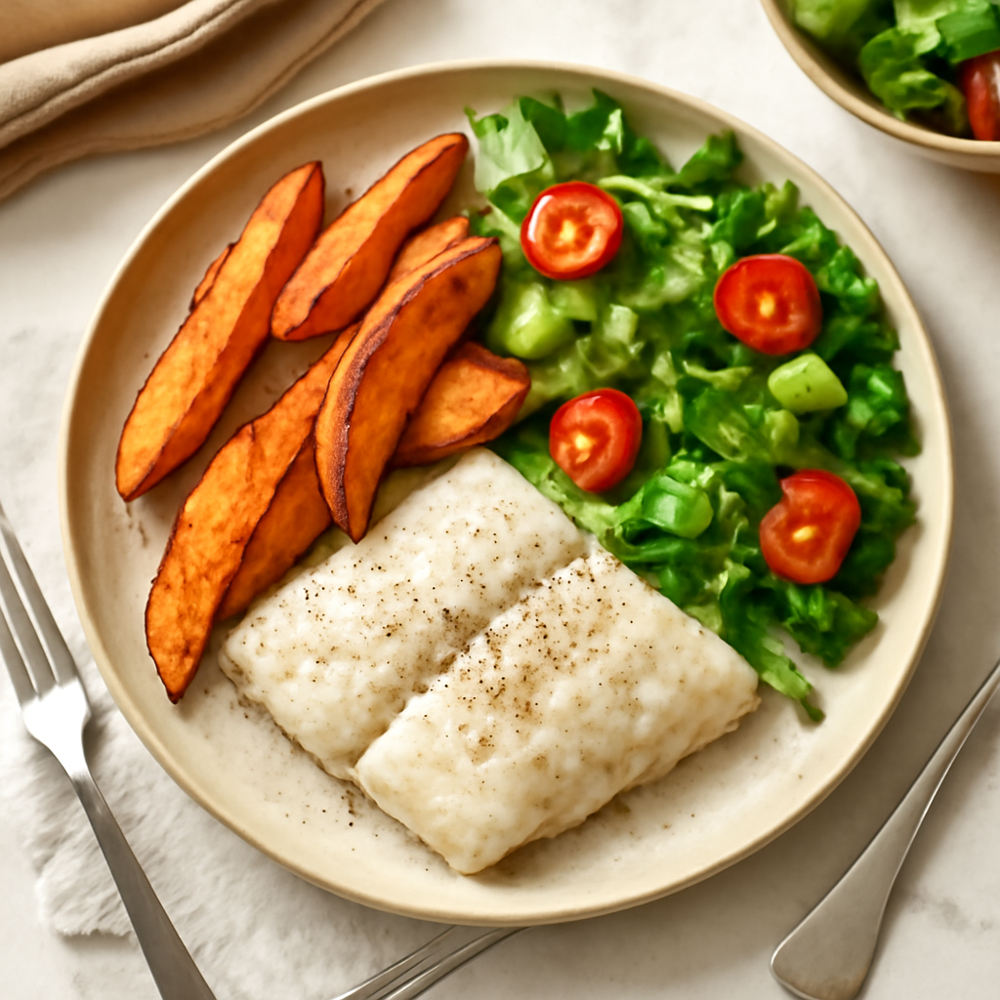

Wednesday — Oven-Baked Cod with Sweet Potato Wedges

Cook Time: 40 minutes
Method: Oven
fishhealthybaked
Ingredients for 6
- 6 cod fillets
- 3 sweet potatoes (cut into wedges)
- 2 tablespoons olive oil
- 1 teaspoon paprika
- Salt & pepper to taste
- Mixed greens (for salad)
- Olive oil & vinegar (for dressing)
Instructions
- Preheat the oven to 425°F (220°C).
- Toss sweet potato wedges with olive oil and season with paprika, salt, and pepper. Bake for 20-25 minutes.
- Season cod with olive oil, salt, and pepper. Add to the oven for the last 10-15 minutes until cooked through.
Toddler Notes
- Ensure fish is flaked to avoid choking hazards.
- Cut sweet potato into small wedges.
← Back to weekly plan